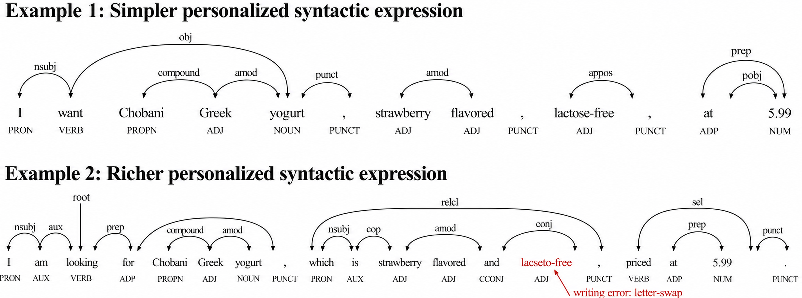
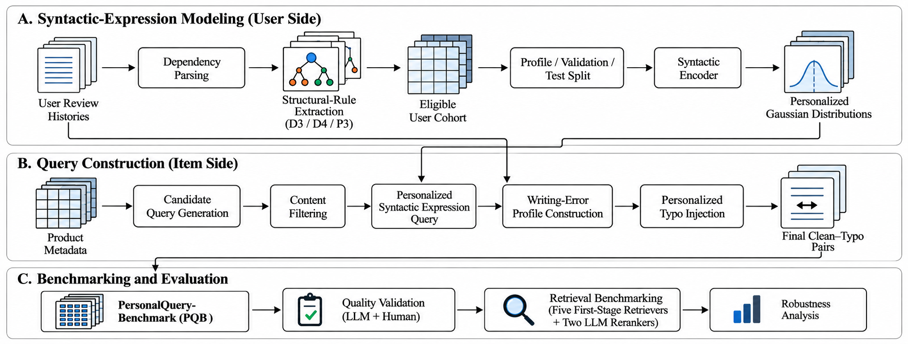

SHARE
Two shoppers want the same product. One types "I want strawberry, lactose-free Greek yogurt", and the other types "I am looking for a Greek yogurt which is strawberry flavored and lactose-free" and misspells a word along the way. Will search return the same results? This paper builds a benchmark, PQB, from real user reviews in three Amazon categories to test exactly this kind of "same need, different wording". The answer is no, and the gap is sizable. With the five core product terms held identical and only the sentence structure changed, among query pairs where at least one query puts the target product at rank 1, roughly 27% to 52% of the time the other query does not, across seven retrieval setups. Adding misspellings that follow the user's own typing habits cuts the top-20 hit rate by up to 12.3 percentage points (BM25), while the BGE-M3 hybrid retriever loses the least, only 4.9 points; models with better overall effectiveness are not necessarily more robust.
Teams running e-commerce or question-answering search can borrow this evaluation idea to check, before launch, how sensitive their system is to differences in how users phrase things. The most useful finding is that "effective is not the same as robust". The two large-language-model rerankers have the best hit rates, yet misspellings hurt them about as much as BM25, because they only rerank BM25's top 25 candidates. The weakness is that every query is generated by a small 0.5-billion-parameter model and then selected, not written by real users. The "personalized" part mainly lives in how queries are selected and how errors are added, and the retrieval evaluation has no random-rewrite control to show how much that personalization matters.
What problem is it actually solving?
Personalized retrieval usually focuses on what users want: preferences, past behavior and intent. This paper looks at the other side, which is how users say it. For the same need, some people list attributes in short phrases and others write full clauses. Some never make typos and others keep swapping adjacent letters. These differences have nothing to do with the need itself, but they affect retrieval.
The difficulty is the lack of evaluation data. Real query logs rarely carry stable user identities and long writing histories, and it is hard to find query pairs with exactly the same need but different wording. PQB sets out to construct such pairs, with each query worded as much as possible like a specific real user.

How the benchmark is built
The data comes from Amazon Reviews 2023, using three categories: musical instruments, video games and baby products. A product a user has reviewed becomes a retrieval target, and the product's title, description and features are concatenated into the document being searched.
Step one builds a syntactic profile for each user. The authors extract structural rules from the user's past reviews, such as dependency relations like "noun modified by adjective" and runs of three part-of-speech tags. Each review sentence becomes a sparse vector of about 22,000 dimensions. An encoder is then trained to compress it to 16 dimensions, pulling sentences from the same user together and pushing different users apart. Finally, a Gaussian distribution is fitted to each user's 16-dimensional sentence vectors as that user's syntactic habit.
Step two generates candidate queries. Five core retrieval terms are fixed for each product, and Qwen2.5-0.5B generates many first-person shopping queries. Each query must contain each of the five terms exactly once and may not add new attributes. Only function words, modifiers and clause structure may change. Among the retained queries for a product, every pair must have a cosine similarity of at least 0.9 under the all-mpnet-base-v2 sentence encoder, which keeps the meaning nearly identical.
Step three picks one query for each of two users. For a given product, a candidate query "belongs" to user A when three conditions hold. Its Mahalanobis distance to A's Gaussian center falls inside the 95% acceptance region (the 95th percentile of a 16-dimensional chi-square distribution, 26.3). It falls outside B's acceptance region. Its log density under A's distribution is at least 1 higher than under B's. Among user pairs where both users have eligible queries, the authors pick the pair whose Gaussians differ the most, measured by the Bhattacharyya distance, which accounts for both the centers and the covariances. Each user then gets the eligible query with the highest density under their own distribution. Every product thus ends up with two queries of the same content but clearly different wording.
Step four adds misspellings. A grammar-correction tool first fixes the user's past reviews, and comparing the original with the corrected text reveals which kinds of errors this user tends to make, such as swapped letters, doubled letters or adjacent-key slips. The user's query is then rewritten. Only words of three or more letters are changed, words where this user's historical character error rate is higher come first, and at most three distinct words per query are changed. For each chosen word, the method first looks in the user's own error history for a character edit it can copy, preferring one whose misspelled word had the same dependency relation and part of speech as the current word. For example, if the user once swapped two letters in the same syntactic position, the current word gets its letters swapped too. If nothing can be reused, an error type is drawn according to how often the user makes each kind. The edited query must still have a sentence-vector similarity of at least 0.9 with the original, or it is discarded.

The final benchmark has 6,516 queries: 3,654 personalized syntactic queries plus 2,862 successfully generated misspelled versions of them.
On quality, human raters scored naturalness at 4.21 out of 5. In another test, annotators first saw a user's past reviews. They were then shown two queries with the same product and core attributes but different sentence structure, one selected using this user's syntactic profile and one a control, in random order. Annotators had to say which one read more like this user. They picked the personalized query 66.3% of the time against a 50% chance level, which means the selected queries do carry recognizable personal syntax.
Result one: changing only sentence structure changes hits
The authors test seven retrieval setups: BM25, SPLADE (learned sparse retrieval), GTE-base (dense vectors), ColBERTv2 (token-level interaction), BGE-M3 hybrid retrieval, and Llama-3.1-8B and Qwen3-Reranker-8B reranking BM25's top 25 results.
The main metric is the flip rate. Among query pairs where at least one query hits the top K, it is the share where only one of the two hits. A flip rate of 40% means that whenever one user sees the target product at rank 1, the other user has a 40% chance of not seeing it there.
| Retrieval setup | Flip rate at rank 1 | Flip rate in top 10 | Top-20 hit-rate drop from misspellings |
|---|---|---|---|
| BM25 | 41.7% | 27.8% | 12.3 points |
| SPLADE | 26.6% | 12.5% | 5.9 points |
| GTE-base | 40.4% | 24.1% | 6.2 points |
| ColBERTv2 | 52.2% | 36.4% | 7.1 points |
| BGE-M3 hybrid | 36.3% | 19.2% | 4.9 points |
| Llama-3.1-8B reranking | 42.0% | 27.8% | 12.0 points |
| Qwen3-Reranker-8B reranking | 43.3% | 24.9% | 11.4 points |
The table shows averages over the three categories. Every setup has a nonzero flip rate, which shows that sentence structure alone can change results. SPLADE is the most stable and ColBERTv2 the least. ColBERTv2 compares every query token against every document token, so function words and clause structure also enter the score. That may be why it is the most sensitive to phrasing, though the paper does not test this directly. Flip rates also do not fall steadily as K grows, so a single cutoff is not enough to judge stability.
Result two: users' own misspellings consistently hurt
The effect of misspellings runs one way. All seven setups lose hit rate and MRR (mean reciprocal rank) at every cutoff. BM25 drops the most, because a single wrong letter means the word no longer matches at all. BGE-M3 hybrid combines dense vectors, sparse weights and token-level interaction, and it drops the least.
The two large-language-model rerankers deserve attention. On clean queries they have the highest hit rates of all seven setups. In baby products, for instance, both reach a 38.4% top-5 hit rate, against 32.2% for BM25 and only 16.1% for GTE-base. Yet misspellings hurt them almost as much as BM25. The reason is in the configuration: they only rerank BM25's top 25 candidates, so once a typo keeps BM25 from retrieving the target, no reranker can see it. The drop at top 20 is also generally larger than at rank 1, which means typos do damage beyond the very top of the ranking.
Limitations as I see them
First, the queries are not written by real users. Every candidate is generated by Qwen2.5-0.5B under strict constraints and then selected by user profile. Real users may vary more, for example by dropping core terms or adding irrelevant details, and PQB forbids both.
Second, there is no random-rewrite control. The paper verifies that personalized misspellings resemble the target user more than global or random errors do, but the retrieval evaluation does not compare rewrites that follow user habits with random rewrites. So how much "personalization" adds to the retrieval conclusions remains unclear.
Third, the evaluation is small and absolute hit rates are low. Baby products has only about 400 queries, and in that category even the best setup reaches only about 53% top-20 hit rate. Flip rates are computed only over pairs where at least one query hits, so the denominator differs by setup and cross-setup comparisons need care.
How a team could try this
- Find different queries in your production logs that led to clicks on the same product, group them by sentence form and whether they contain typos, and compute a similar flip rate to see how sensitive your live system is.
- If you use BM25 retrieval followed by a large-model reranker, evaluate recall on misspelled queries separately, and consider adding dense retrieval or spelling correction at the retrieval stage rather than relying on reranking.
- When comparing retrieval designs, report a stability metric alongside average hit rate, such as result agreement across different phrasings of the same need.
- PQB's code and data are public, so you can run an offline evaluation on its three categories directly.
One-sentence conclusion
Rephrasing the same need or adding a user's habitual typos changes retrieval results noticeably; hybrid retrieval copes best with typos, while the most effective large-model rerankers are not more robust because they are bounded by BM25 recall.
| Dimension | Assessment |
|---|---|
| Importance | Medium-high. E-commerce and question-answering search both face differences in user phrasing |
| Novelty | Medium. Building query pairs from syntactic Gaussian profiles and personal error habits is carefully designed |
| Evidence | Medium. Seven setups, three categories and human validation, but the queries are generated and there is no random-rewrite control |
| Engineering cost | Low. Code and data are public for offline evaluation |
| Worth trying | Yes, borrow the flip-rate metric to check your own retrieval system |
Discussion
Add experiment details, reproduction notes or a different take. Requires a GitHub sign-in.
Loading the discussion…